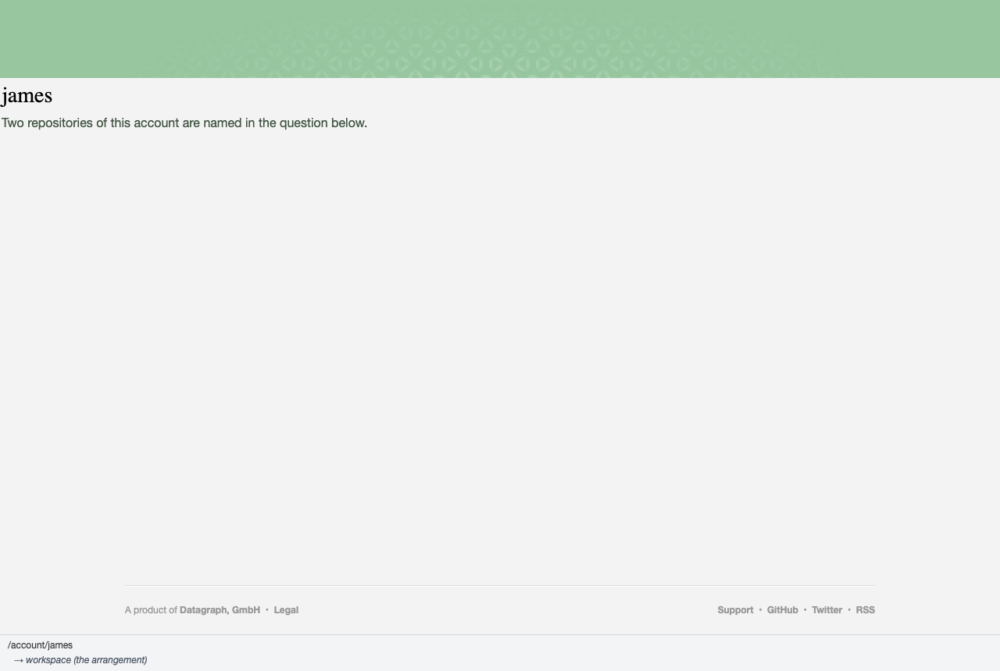
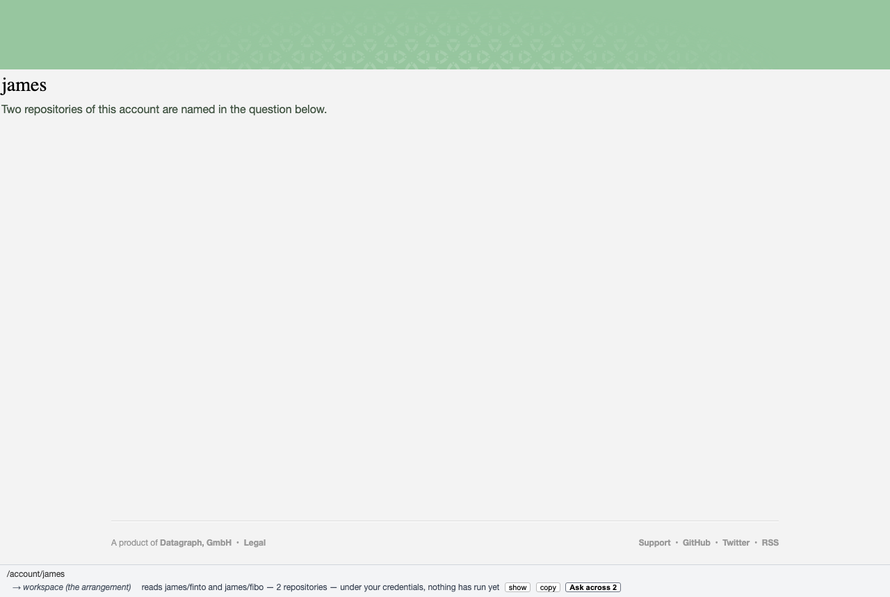
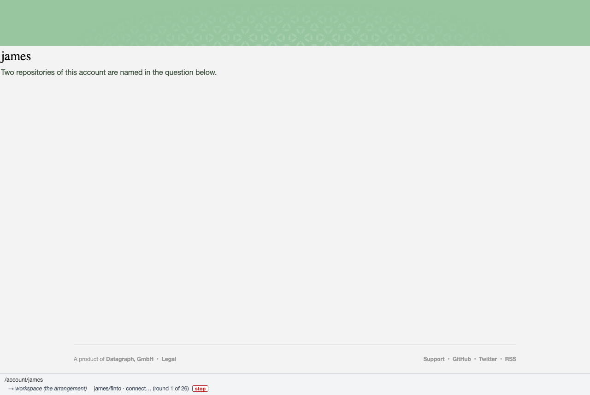
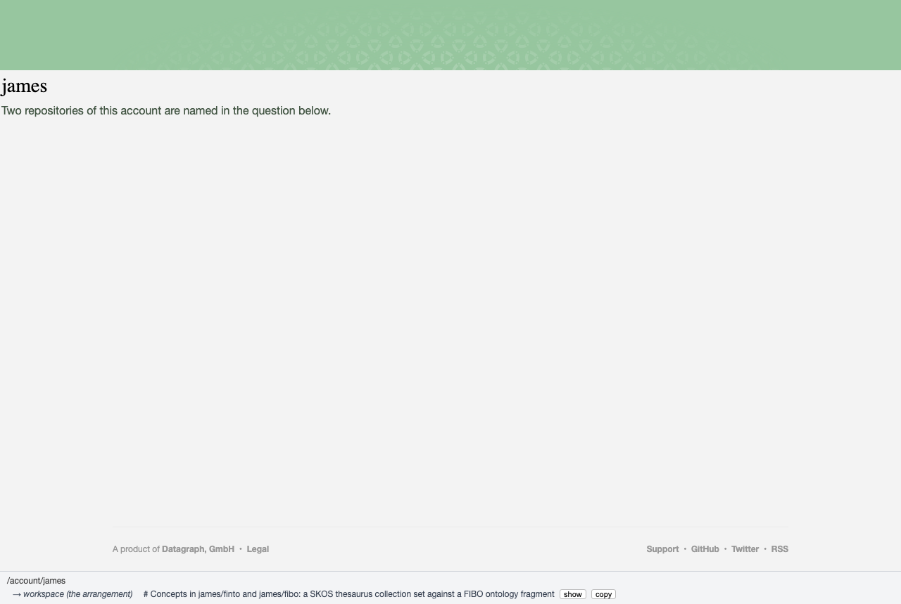
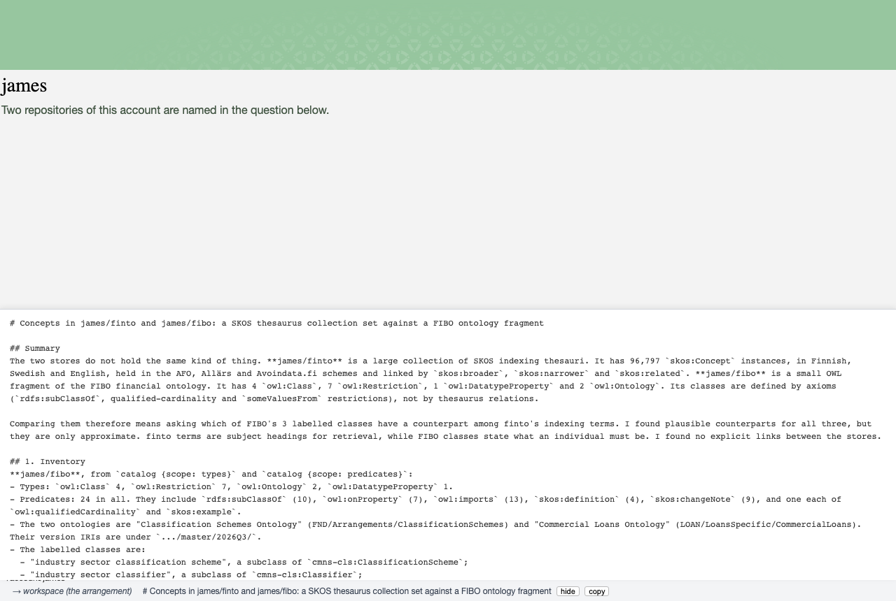
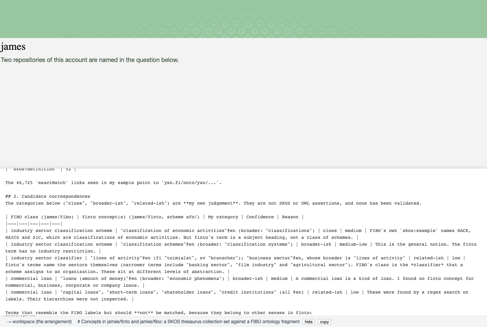
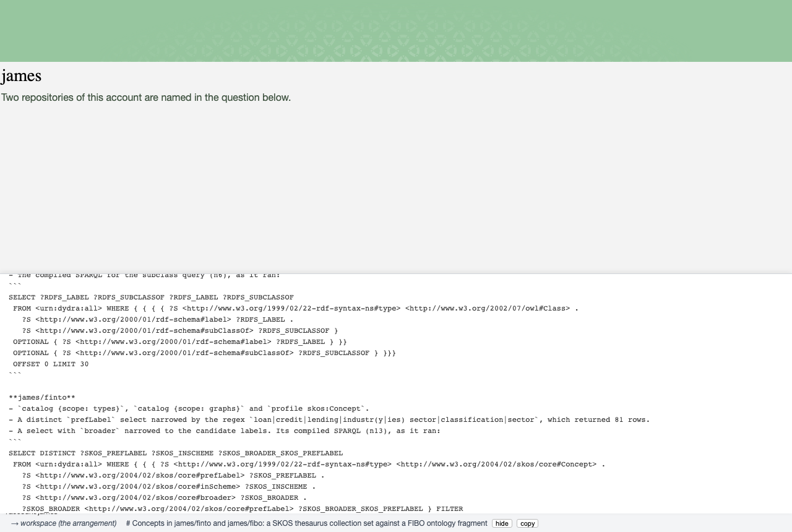
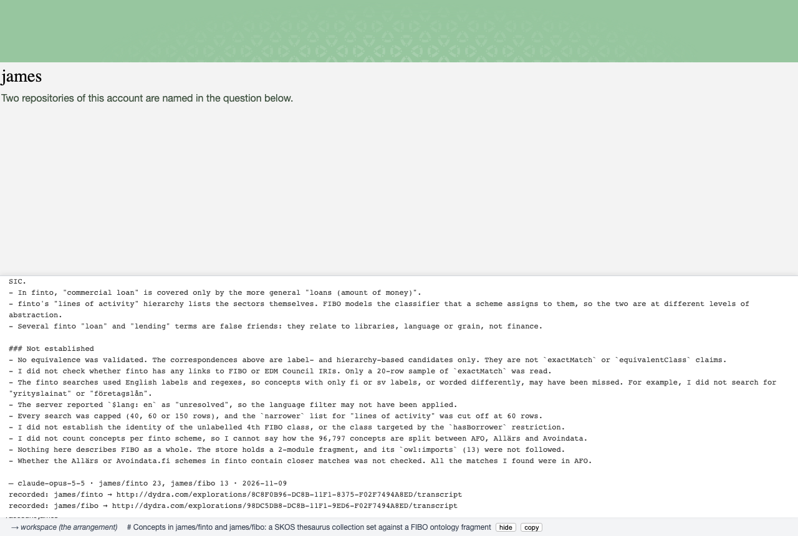

An analysis across two repositories, with a real model
Later run: 10 November. The same question as the worked
example of §35, asked again on 9 November 2026 — this time against the patched
service, and with Anthropic's claude-opus-5-5 deciding every call.
One line is typed into the location bar — compare the concepts present
in james/finto and james/fibo — and nothing else is supplied. The model
is given the brief, the two stores' MCP resources, and a round budget. What it
does with them is its own.
What is real here
All of it. The earlier capture had to say which half was scripted; this one does not.
- The repositories.
james/fintoandjames/fiboon dydra.com, read live through their own MCP resources. Every count, label, class, restriction and compiled query in the report below came back from the service during the run. - The service. Running the patched score layer: the literal fix and the
narrowfix are both in effect, which is why this run could do what the last one could not. - The client path. Reading the line, the disclosure, the grant, the brief, the per-store routing and tool naming, the digesting of large payloads, the progress line, and the recording of the run as RDF.
- The model. Asked the question and left to it. 26 turns, 32 tool calls across the two stores, 4 requests for a digested payload in full.
Neither credential reached the browser. The dydra token is read from
~/.dydra and added by the harness proxy; the provider key is read
from the environment or ~/.anthropic and added by the
/model relay. The page holds a placeholder for each.
The question, and what it authorises




What the model did
Twenty-five rounds of tool calls and then the report. The operations it chose,
counted: select 14, narrow 7, catalog 4,
materialize 3, profile 2, connect 2 —
and four result_full requests, where a payload had been digested
and it wanted the whole of it.
The shape of the exploration is worth reading as a shape. It inventoried both
stores before saying anything about either; it read fibo's four classes with
their restrictions; it profiled finto's skos:Concept and counted its
relations; and then it spent the middle of the run searching finto's labels, in
three languages, for the subjects fibo turned out to be about — which is the step
that was impossible a day earlier.


The answer
The report is below in the pane, folded under the bar rather than truncated
into it. It is reproduced in full as report.md
in this directory; the run's own record — every turn, every call, every status
and byte count — is in run.json.
That report.md was not scraped from the page. It was read back
out of james/mcp with a SPARQL query against the graph the
interface wrote while the run was happening —
<http://dydra.com/explorations/8C8F0B96-…/transcript>, whose
mcp:content literals hold the prompt, each payload and the prose.
Keeping the analysis (§35.4) is therefore not a claim in this page; it is how
the page got its text.





Two things this run found
The round budget had no way to end in an answer
The first live run spent all 26 of its rounds exploring and was cut off with
stopped after 26 tool rounds and nothing to show. Every call had
succeeded; the work was simply discarded, because the loop ended on a tool
result that no one was ever asked to read.
The budget bounds what may be spent. It was never meant to decide
whether the question gets answered. So the loop now asks once more with the
tools withheld — there is nothing left to call, and the only thing to do with a
turn is to write — and the brief tells the model to leave itself a round rather
than need that. The screenshots of the cut-short run are kept in
cut-short/.
This second run did not need the closing turn: it finished on its own at round 26, which is what the brief change was for. The closing turn is a backstop, and it is the unit tests that exercise it.
A true-looking caveat produced by a reporting artefact
The report's Not established says: The server reported
The filter was applied — the rows came back English — but the
reply had listed $lang: en as "unresolved", so the language filter may not have been
applied.en among the names it could not resolve, because
name resolution runs before the where-clause is compiled and did not know that
$lang takes characters rather than a term.
That is the worst place for an artefact to surface: the section of a report a
reader trusts to say what is not known. $contains,
$starts, $ends, $regex,
$flags and $lang are now opaque to resolution, which is
the same distinction narrow already made when compiling them. Fixed
in gensrc and in the de17 patch bundle; not yet loaded on the live host.
What the run cost
| Model turns | 26 (25 with tool calls, the last the report) |
|---|---|
| Served as | claude-opus-5-5 |
| Tool calls | 32 — james/finto 19, james/fibo 13, plus 4 result_full |
| Service requests relayed | 40, all 200 but one |
| Tokens | 527 481 in, 12 480 out |
| Recorded as | two transcripts in james/mcp, one per store |
The one failure is /system/accounts/james/collaboration, which
answers 500 on dydra.com. The client is built to survive it and does; it is
noted here because a capture that hides a service fault is worth less than one
that shows it.